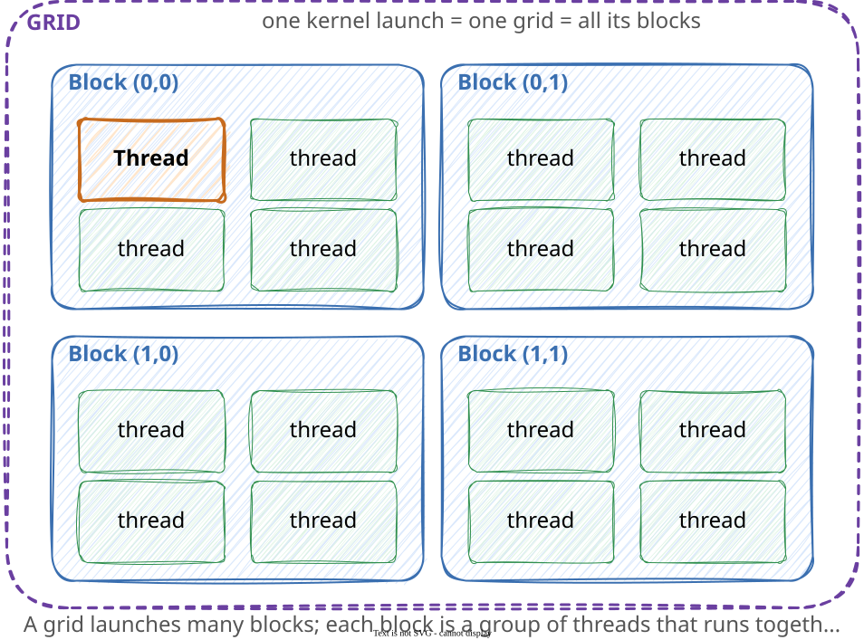
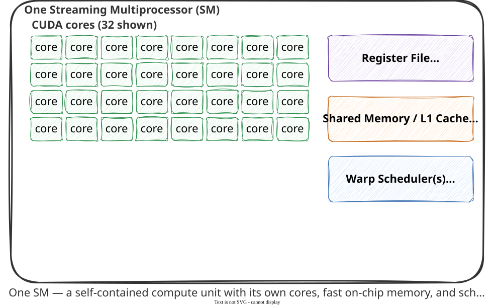
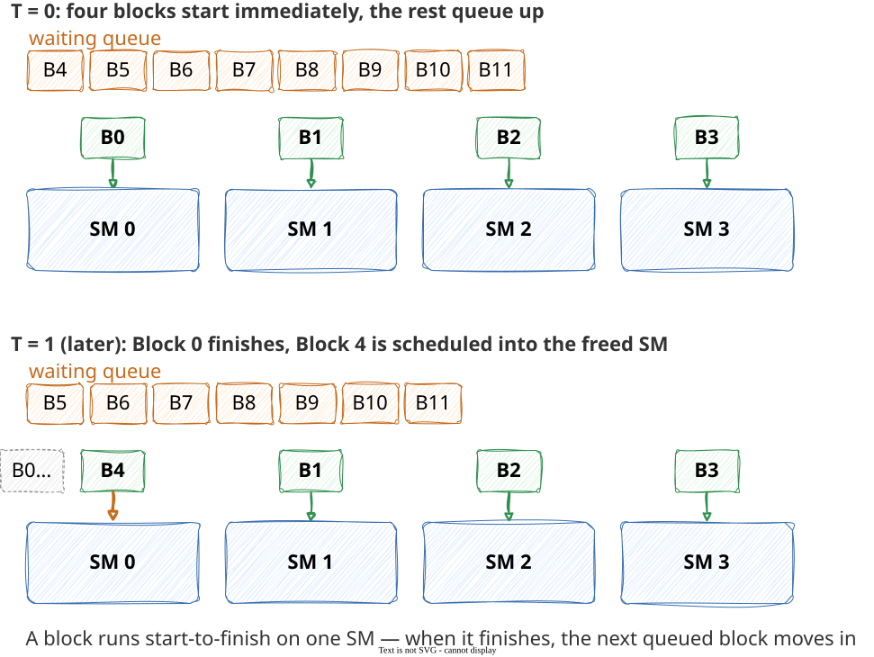
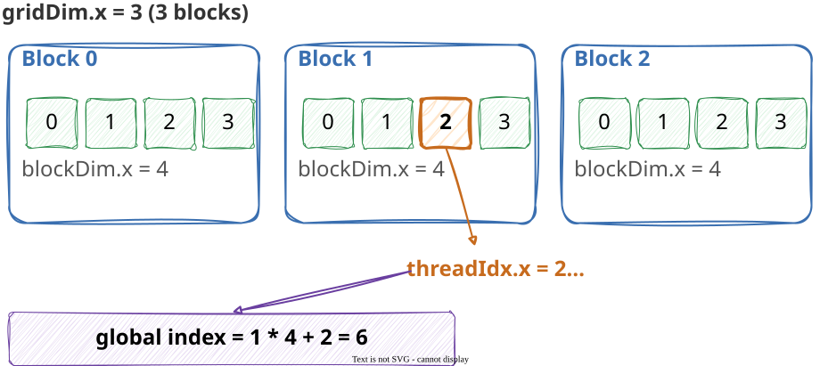
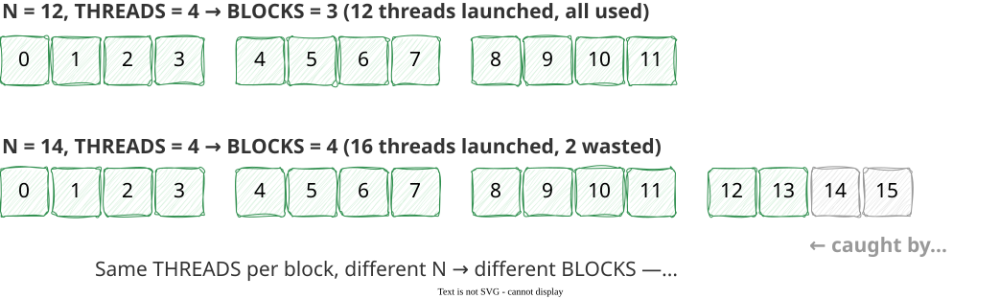
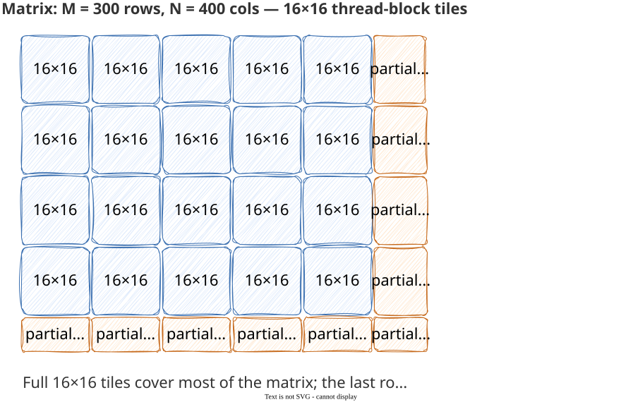
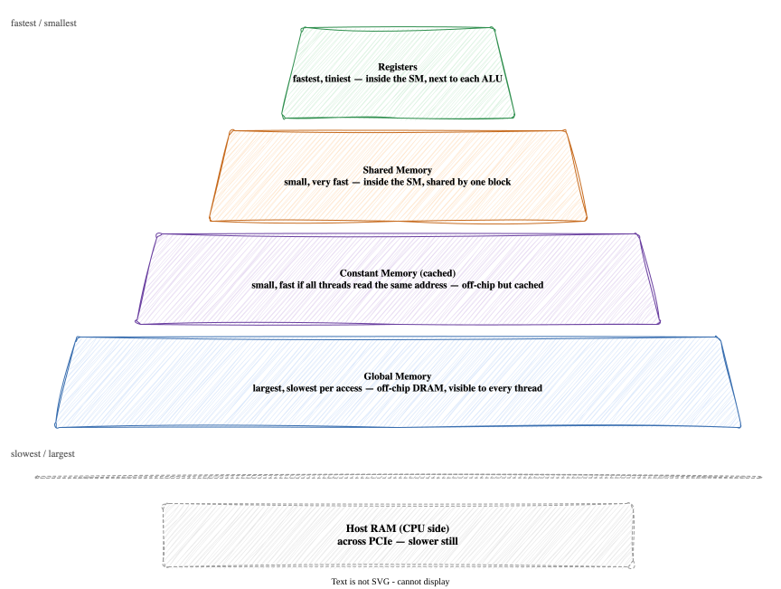
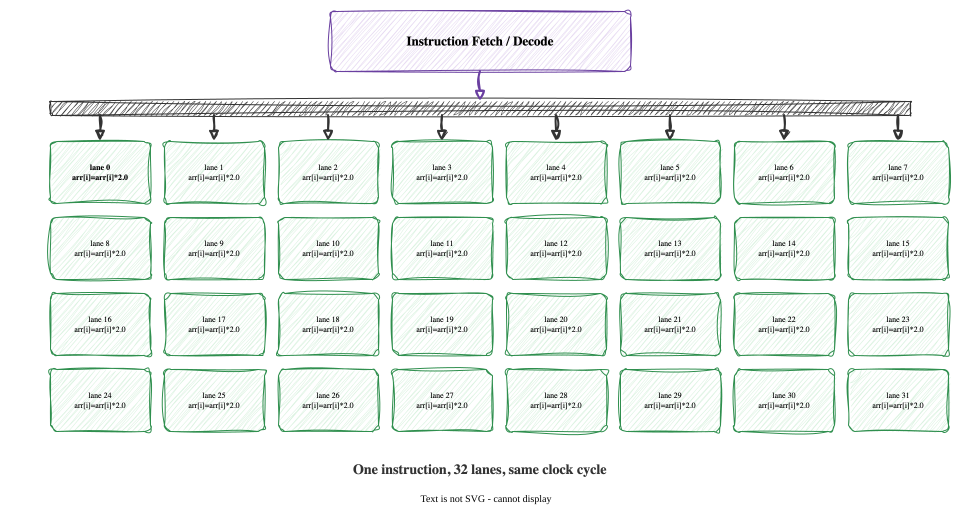
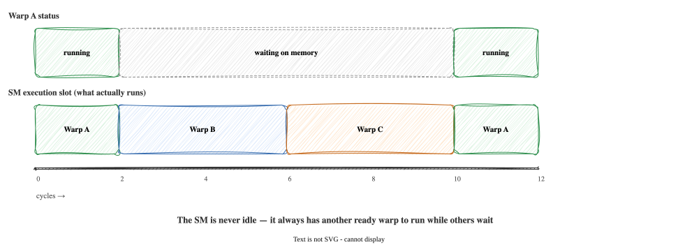
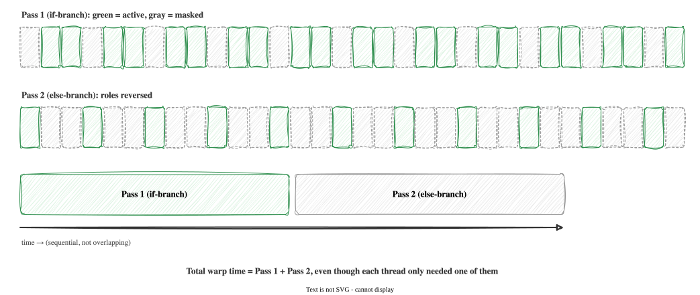

Module 2: CUDA Kernels
GPU Architecture and 1D/2D Parallelism — COSC 435
Session 1 · Sep 21 · Inside a GPU
Today’s Plan
- What’s actually on a GPU chip: Streaming Multiprocessors and CUDA cores
- How many cores a real GPU has, and how they’re grouped
- How your program’s work — threads, grouped into blocks — gets assigned onto that fixed hardware
- Why a bigger problem means more scheduling rounds, not more silicon
Vocabulary: Threads, Blocks, and Grids
Three words you’ll see on every slide from here on — the concepts today, the code Sep 23:

A thread is the smallest unit of work — one lane running your program, working on one piece of data
A block is a group of threads that run together as a unit, share fast on-chip memory, and get scheduled onto a single SM
A grid is the full set of blocks launched by one kernel call — potentially thousands of blocks, covering your entire problem
From One Chip to Many Compute Units
- Module 1 compared CPU and GPU at the level of headline numbers (cores, clock, bandwidth) — today we open up the GPU chip itself
- A GPU is not one big processor — it’s a chip subdivided into dozens of smaller, largely independent compute units
- Each of those units is called a Streaming Multiprocessor, or SM
- Understanding SMs is the prerequisite for understanding warps, occupancy, and divergence (Sep 30) — those are all properties of one SM
The Streaming Multiprocessor (SM)

An SM bundles together: many CUDA cores (the ALUs that do arithmetic), a register file (fast per-thread storage), shared memory (fast per-block storage — full detail in Module 4), and warp schedulers (full detail Sep 30)
A GPU chip contains many SMs — tens of them on a typical GPU — all working independently on different pieces of your problem at once
Every thread block your kernel launches is assigned to run on exactly one SM
CUDA Cores: The Actual ALUs
- A CUDA core is one simple arithmetic unit — it can do one floating-point add or multiply per clock cycle, nothing more
- Compare to a CPU core: a CUDA core has no branch predictor, no out-of-order execution, no deep pipeline — just an ALU and enough control to execute the instruction a warp scheduler hands it (Module 1’s die-anatomy diagram, made concrete)
- Total CUDA cores on a chip = (number of SMs) × (cores per SM)
- This total is a fixed, physical property of the chip — it does not change based on what code you run
How Many Cores? A Concrete Example
The GPU behind every lab and checkpoint this semester — Google Colab’s NVIDIA T4 — breaks down like this:
Streaming Multiprocessors (SMs) : 40
CUDA cores per SM : 64
Total CUDA cores : 40 × 64 = 2,560
Memory : 16 GB GDDR6
Memory bandwidth : ~320 GB/s- 2,560 cores sounds enormous next to a CPU’s 8–32 — and it is — but it’s still a fixed number, not something that grows with your problem size
- A data-center GPU (H100-class, Module 1’s “2,000 TFLOPS” chip) has far more SMs and cores than a T4 — the T4 is a modest, power-efficient GPU meant for exactly this kind of interactive/educational workload
A Bigger Problem, the Same Hardware
- The GPU always has the same 2,560 cores (on a T4) — that number never changes, no matter how large your problem gets
- A bigger problem means more thread blocks are launched, and those blocks queue up to be scheduled onto the SMs that already exist
- If you launch more blocks than can run at once, extra blocks simply wait until an SM finishes its current block and becomes free — same hardware, more rounds of scheduling
- This is why GPU speedup at small N is often worse than a CPU (fixed launch overhead dominates a tiny amount of work) but improves as N grows (that overhead gets amortized over far more useful work)
From Grid to Hardware: How Blocks Get Scheduled

Your kernel launch specifies a grid of blocks; the hardware decides which SM runs which block, and in what order
A block runs start-to-finish on a single SM — it never moves partway through, and it never splits across two SMs
An SM can often hold more than one resident block at a time if there’s room (this is exactly what occupancy, covered Sep 30, measures) — the diagram above simplifies to one block per SM for clarity
You don’t control this scheduling directly — you control it indirectly, through launch configuration (block size, grid size) — Sep 23 teaches you to write that configuration
This Week
- Session 2 (Wed, Sep 23): From architecture to code — writing and launching your first CUDA kernels. Quiz 2 (covers Module 1) opens that session.
- Lab 04 (Fri, Sep 25): Your first Numba CUDA kernel — vector addition
- Everything on today’s slides (SMs, cores, block scheduling) is background you’ll use starting Sep 23, not something graded on its own — but Quiz 3 (Oct 5) and both exams draw on it
Session 2 · Sep 23 · The Execution Model
Today’s Plan
- Then: what a CUDA kernel actually is, and how to launch one
- The thread/block/grid indexing hierarchy — in 1D, then 2D
- Two worked example kernels, and a preview of the capstone’s kernel
What a Kernel Is
- A kernel is a function that runs on the GPU — you write it once, and the GPU runs that same code for every thread, simultaneously
- Each thread automatically knows its own position in the grid of threads — that position is how a thread figures out which piece of data it’s responsible for
- Marked with the
@cuda.jitdecorator, which compiles ordinary-looking Python into GPU machine code
The Thread Grid

blockIdx.x— which block is this thread in?threadIdx.x— where is this thread within its block?blockDim.x— how many threads are in each block?- Global index =
blockIdx.x * blockDim.x + threadIdx.x—cuda.grid(1)computes exactly this in one call - This global index is what a thread uses to know which array element is “its” element
Launching a Kernel
import numpy as np
from numba import cuda
N = 1_000_000
arr = np.ones(N, dtype=np.float32)
arr_gpu = cuda.to_device(arr) # host → device transfer
THREADS = 256
BLOCKS = (N + THREADS - 1) // THREADS # ceiling division — see below
my_kernel[BLOCKS, THREADS](arr_gpu) # launch: BLOCKS × THREADS total threads
cuda.synchronize() # wait for the GPU to finish
result = arr_gpu.copy_to_host() # device → host transfer(N + THREADS - 1) // THREADSis ceiling division — the standard way to compute “enough blocks to cover N, rounding up” using only integer arithmetic- You will write this exact five-line pattern (transfer, configure, launch, synchronize, transfer back) in nearly every lab this semester
The Bounds Guard
BLOCKS × THREADSis a ceiling, computed by rounding up — so there are almost always a few extra threads beyond the last real array element- Those extra threads still run the kernel body — without the guard, they read/write memory past the end of the array
- Consequence: undefined behavior — sometimes a crash, sometimes silent data corruption that produces a wrong answer with no error message at all
Worked Example: Scalar Multiply
- One thread per array element — for N = 500,000 elements, the GPU launches 500,000 threads
- No thread needs any other thread’s result — this is the “embarrassingly parallel” shape from Module 1
- This is Lab 04 Exercise 1’s pattern; you’ll write the launch configuration yourself in lab
Worked Example: Add Two Arrays
- Three arrays now live on the device: two inputs, one output
- Still no dependencies between elements — output[i] only ever needs input[i], never any other index
- Ask yourself: if N doubles, what (if anything) changes in the launch configuration? (Answer:
BLOCKSrecomputes via the same ceiling-division formula —THREADSusually stays fixed)
Thread Count Intuition

- Students who can draw this diagram from scratch can debug almost any 1D kernel launch-configuration bug
- The gray/crossed-out threads in the N=14 case are exactly why the bounds guard exists — they’re real threads that ran, just with nothing valid to do
From 1D to 2D
- Images, matrices, and (soon) the capstone’s similarity table are inherently two-dimensional
- Same idea as 1D, doubled: one thread per
(row, col)pair instead of one thread per index cuda.grid(2)returns a(row, col)tuple directly — you don’t need to compute it by hand fromblockIdx/threadIdx(though you still can, next slide shows the underlying formula)
2D Launch Configuration

16×16 = 256 threads per block is a common convention — a power-of-two total that divides evenly into full warps (32 threads each, from Sep 30’s content)
300 is not a multiple of 16 → the last block in each row/column has extra threads; the bounds guard filters them exactly as in 1D
Thread Index in 2D

- This is the formula
cuda.grid(2)computes internally — same ceiling-division logic as 1D, just applied on both axes independently - A thread that can correctly compute its own
(row, col)here has mastered 2D kernels — everything else (2D bounds checks, 2D array indexing) follows directly
Preview: The Capstone’s Kernel
- This is the heart of the semester-long capstone, in outline form — one thread per (query, database-item) pair
- At capstone scale (1,000 queries × 100,000 database items) that’s 100 million threads, each running this exact loop independently
- You’ll fill in a version of this kernel’s gaps at CK-13; Module 4 will later replace the inner loop with tiled shared-memory access for a major speedup
Looking Ahead
- Lab 04 (Fri, Sep 25): Write three kernels — scalar multiply, array add, one of your own design. Observe what happens with a missing bounds guard.
- Lab 05 (Fri, Oct 2): Naive matrix multiplication — implement, time, and verify against NumPy’s reference (2D kernel skills applied at full scale)
- Sep 28 (next lecture): GPU memory hierarchy — where data actually lives, and what it costs to access each kind
Checkpoint Preview
Checkpoint CK-04 will ask you to:
- Write a 1D kernel with a correct bounds guard, given a word description of the computation
- Give the launch configuration for a specified N and thread-block size
- Trace through a 2D thread index calculation by hand
Session 3 · Sep 28 · GPU Memory Hierarchy
Today’s Plan
- Every kind of memory a GPU has, from fastest/smallest to slowest/largest
- Where each kind physically lives, and what it costs to read or write it
- The host↔︎device boundary — the slowest hop of all, and how to minimize crossing it
Not All GPU Memory Is Equal

- Just like a CPU has registers → L1 → L2 → L3 → RAM, a GPU has its own hierarchy — smaller and faster near the compute units, larger and slower further away
- The core tradeoff is identical to any memory hierarchy: capacity and speed trade off against each other
- Today: what each tier is for. Module 4 teaches you to use shared memory in a kernel; today is the map, not yet the tool
Registers: Fastest, Per-Thread
- Every thread gets its own small set of registers — the fastest storage on the entire chip, physically adjacent to the ALU that uses them
- Local variables in your kernel (like
accin the similarity-kernel preview from Sep 23) live in registers by default - Registers are a scarce, fixed resource per SM — the more registers each thread’s kernel needs, the fewer threads (and therefore fewer warps) can be resident on an SM at once
- This is the direct link to occupancy (Sep 30): register usage per thread is one of the two things that can cap how many warps fit on an SM
Shared Memory: Fast, Per-Block
- Shared memory is a small, fast, on-chip scratchpad that every thread in the same block can read and write
- Unlike registers (private to one thread) or global memory (visible to everyone but slow), shared memory is the middle ground: fast and shared, but only within a block
- Threads use it as a manually-managed cache: copy a chunk of data from global memory into shared memory once, then have many threads reuse it without going back to global memory each time
- Full syntax and a worked example (
cuda.shared.array,cuda.syncthreads()) is Module 4’s subject — today, just know it exists and why it’s valuable
Constant Memory: Small, Cached, Broadcast-Friendly
- Constant memory is a small (tens of KB), read-only region that’s aggressively cached
- It shines in one specific pattern: every thread in a warp reading the same address at the same time — e.g., a shared coefficient or lookup-table value used identically by every thread
- When that pattern holds, the read is effectively broadcast to all 32 threads in a warp from cache, instead of 32 separate trips to global memory
- You won’t write to constant memory in this course’s kernels, but recognizing the pattern matters for reading exam questions about memory-access strategy
Local Memory: A Trap in the Name
- Local memory is per-thread scope, like registers — but it is not fast. It physically lives in the same off-chip DRAM as global memory, just addressed privately per thread
- The compiler falls back to local memory when a thread’s data doesn’t fit in registers — large local arrays, or a kernel using more registers than the hardware budget allows (“register spilling”)
- The name is the trap: “local” sounds like it should mean “close and fast,” but it means “private scope, global-memory speed”
- Practical takeaway: keep per-thread working data small and simple, so the compiler keeps it in registers instead of spilling to local memory
Global Memory: Largest, Slowest, Universal
- Global memory is the GPU’s main pool — the 16 GB (T4) of GDDR6 from Sep 21’s specs. Every thread on the entire GPU can read and write it
- It’s the slowest tier per access (hundreds of cycles of latency, same “memory wall” idea from Module 1) but by far the largest
cuda.to_device()copies your data here; every kernel argument you’ve written so far (arr,A,B,C,Q,D) lives in global memory unless you explicitly move it somewhere else- Module 3 teaches how the pattern of global-memory access (not just how much of it) affects performance — this is where “coalescing” comes from
The Memory Hierarchy, Summarized
| Tier | Scope | Speed | Typical size |
|---|---|---|---|
| Registers | One thread | Fastest | A few KB per thread (shared across all resident threads on an SM) |
| Shared memory | One block | Very fast | ~48–164 KB per SM (hardware-dependent) |
| Constant memory | Whole GPU (read-only) | Fast if all threads agree on the address | Tens of KB |
| Local memory | One thread | Slow (physically off-chip) | Spills only — not a size you allocate directly |
| Global memory | Whole GPU | Slowest per access | GBs (16 GB on a T4) |
- Reading this table top to bottom is reading the hierarchy from fastest/smallest to slowest/largest — the same shape as any CPU’s cache hierarchy, just with GPU-specific names and a crucial addition: scope (per-thread vs. per-block vs. whole-GPU) matters as much as speed
Beyond the Chip: The Host↔︎Device Boundary
CPU (Host RAM) ←—[PCIe, ~16 GB/s]—→ GPU (Device global memory, ~320 GB/s on a T4)- Everything on the tiers above lives inside the GPU. Getting data onto the GPU in the first place — or back off it — crosses a much slower link: PCIe, connecting the GPU card to the rest of the computer
- PCIe bandwidth (~16 GB/s) is roughly 20× slower than the T4’s own global-memory bandwidth (~320 GB/s), and dramatically slower than any on-chip tier
cuda.to_device()and.copy_to_host()both cross this boundary — every call is expensive relative to anything happening once your data is already on the GPU
Minimizing Transfers
- Rule of thumb: transfer data to the GPU once, do as much work as possible while it’s there, and transfer results back once — not on every iteration of a loop
- A very common early-semester mistake: copying results back to the host inside a loop “just to check on them,” which turns a fast GPU computation into one bottlenecked by PCIe
- Module 6 (CuPy) makes this pattern implicit — but understanding it explicitly now is what lets you recognize when a library is silently doing (or failing to do) this for you
This Week
- Sep 30 (next lecture): Warp scheduling, occupancy, and thread divergence — the last piece of the GPU-execution picture, and where the register/shared-memory scope facts from today become a hard resource budget
- Quiz 3 (Oct 5): covers all of Module 2 — architecture (today, Sep 21), execution model (Sep 23), and warps/occupancy/divergence (Sep 30)
Session · Sep 30 · Warps, Occupancy & Divergence
The Synchronized Swim Team
- Picture a synchronized swim team of 32 swimmers: the coach calls out one move at a time — “kick,” then “arms out,” then “dive” — and every swimmer performs that exact move at that exact moment
- No swimmer can be a move ahead or behind; they share one set of instructions
- A GPU’s threads work the same way, in groups of exactly 32 — that group is called a warp
- This is why a GPU doesn’t have “10,000 independent brains” — it has far fewer instruction streams, each one driving 32 lock-step threads
What Is a Warp?
- A warp is a group of 32 threads that the hardware schedules and executes together, one instruction at a time, in lock-step
threadIdx.xvalues 0-31 form warp 0, values 32-63 form warp 1, and so on within a block- All 32 threads in a warp execute the same instruction on the same clock cycle — this is called SIMT (Single Instruction, Multiple Threads)
- One instruction-fetch/decode unit serves all 32 lanes — that’s the hardware trade that makes thousands of simple cores possible (the “twenty ordinary cashiers” idea from Module 0, made concrete)
A Warp, Visually

- If a block has 256 threads, that’s exactly
256 / 32 = 8warps - Block sizes that aren’t multiples of 32 waste lanes — a block of 100 threads still occupies 4 warps (128 lanes), with the last warp’s 28 unused lanes doing nothing useful
Hiding Latency: The Warp Scheduler
- A memory read from global memory can take hundreds of clock cycles to come back — if the GPU just sat idle waiting, it would waste nearly all of its compute capacity
- Instead, each Streaming Multiprocessor (SM) keeps many warps resident at once — often dozens — and a warp scheduler switches to a different ready warp the instant one warp stalls on a memory access
- Analogy: a short-order cook working several dishes at once. While one dish is in the oven (a warp waiting on memory), the cook doesn’t stand and watch — they stir another pan (switch to a different warp) and come back later
- This is why GPUs want so much parallelism: idle warps are what a scheduler needs on hand to keep the hardware busy
Warp Scheduling, Visually

- The scheduler’s job is entirely about keeping some warp always running, not about running every warp faster
- More resident warps = more chances to hide a stall — this is exactly what occupancy measures
Occupancy: How Many Warps Can Live Here
- Occupancy = the number of warps actually resident on an SM, divided by the maximum the hardware could support
- Higher occupancy generally means more scheduling flexibility to hide memory latency — but it isn’t free to achieve
- Each resident thread needs its own registers, and each resident block needs its share of shared memory; an SM has a fixed budget of both
- If your kernel’s threads use a lot of registers, fewer threads (fewer warps) fit at once — occupancy drops, even though nothing about your code is “wrong”
A Simple Occupancy Example
Suppose an SM supports a maximum of 1536 resident threads (a realistic hardware limit), and you launch blocks of 256 threads.
Max threads per SM : 1536
Threads per block : 256
Max blocks that fit by thread count : 1536 // 256 = 6 blocks
Resident threads : 6 × 256 = 1536
Occupancy : 1536 / 1536 = 100%Now suppose you instead launch blocks of 300 threads — an awkward, non-power-of-2 size:
Max blocks that fit : 1536 // 300 = 5 blocks (integer division!)
Resident threads : 5 × 300 = 1500
Occupancy : 1500 / 1536 ≈ 97.7%- Block size interacts with occupancy in ways that aren’t always obvious — this is why launch configuration (Module 3) is worth experimenting with, not just guessing
- Real kernels also have a register budget per SM, which can lower occupancy further — Module 4 picks this up once shared memory is in the picture
Thread Divergence: When Threads Disagree
- Every thread in a warp executes the same instruction together — but what happens when an
ifsends different threads down different paths? - Within one warp, some threads may satisfy
arr[i] > 0and others may not — the warp cannot run two different instructions at once - This situation is called thread divergence, and it has a real, measurable cost
How Divergence Is Handled: Predication
- The hardware runs both branches, one after another, for the whole warp — on the “positive” pass, threads that fail the condition are masked off (they execute the instruction but discard the result); on the “negative” pass, the roles reverse
- Total time for a divergent warp ≈ time for all branches taken combined, not just the one each thread needed
- A warp where every thread takes the same branch pays no divergence penalty at all — the cost only appears when a single warp’s threads disagree
Warp with a divergent if/else:
Pass 1 (if-branch): active = threads where arr[i] > 0, others masked/idle
Pass 2 (else-branch): active = threads where arr[i] <= 0, others masked/idle
Total warp time ≈ time(if-branch) + time(else-branch)Divergence, Visually

- Contrast with a warp where the condition is the same for all 32 threads (e.g., branching on
blockIdx.xinstead ofarr[i]) — no masking needed, no penalty - Rule of thumb: conditionals on data (varies per thread) are the risky ones; conditionals on thread/block identity (same for a whole warp) are free
Why This Matters for Your Code
- You will not be asked to eliminate every
ifstatement — most real kernels need some - What matters: when a conditional’s outcome depends on data that varies across threads in the same warp, expect a real performance cost proportional to how many distinct branches get taken
- A bounds guard (
if i < n:) is usually cheap in practice — most warps are either fully in-bounds or fully out-of-bounds, so few warps actually diverge on it - Data-dependent branching inside the “hot” part of a kernel (like the classify example above) is where divergence bites hardest
This Session: Recap
- Warp = 32 threads executing in lock-step (SIMT) — the real unit of GPU scheduling, not the individual thread
- Occupancy = resident warps ÷ maximum possible, limited by per-thread resource usage (registers, shared memory)
- Divergence = the cost paid when threads in one warp disagree on which branch to take — paid in serialized passes, not parallel ones
- These three ideas explain why GPU code that looks correct can still run far below its theoretical peak — Module 3’s profiling content picks up exactly this thread
Module 2 Wrap-Up
- Sep 21: GPUs are built from a fixed number of SMs, each with a fixed number of CUDA cores — bigger problems mean more scheduling rounds, not more silicon
- Sep 23: Kernels are written once and run per-thread;
cuda.grid()(1D or 2D) tells each thread its position, and every launch needs a bounds guard - Sep 28: Memory has a hierarchy (registers → shared → constant/global) with speed, scope, and physical location all varying together — and the host↔︎device PCIe hop is the slowest link in the whole chain
- Sep 30: Threads execute in lock-step groups of 32 (warps); occupancy measures how many warps fit at once; divergence is the cost of threads in one warp disagreeing on a branch
Looking Ahead
- Lab 05 (Fri, Oct 2): Naive matrix multiplication — implement a 2D kernel, time it, and verify against NumPy’s reference
- Quiz 3 (Mon, Oct 5): covers all of Module 2 (SMs/cores, execution model, memory hierarchy, warps/occupancy/divergence)
- Module 3 starts Oct 5: kernel design patterns and profiling — picking up exactly where Sep 30’s “why code that looks correct can run below peak” thread leaves off
Checkpoint Preview
Checkpoint CK-05 will ask you to:
- Unpack a 2D global thread index with
cuda.grid(2) - Write the 2D bounds guard for a given matrix shape
- Implement a small 2D transformation (e.g. a 180° rotation) using that index
- Give the 2D launch configuration (
blocks_per_gridtuple) for a specified matrix shape and thread-block size